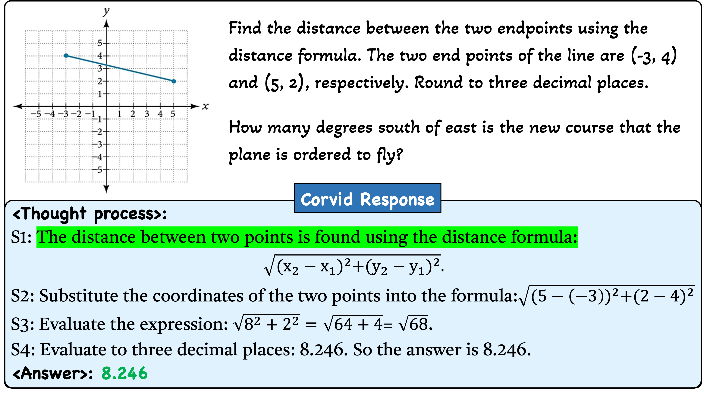
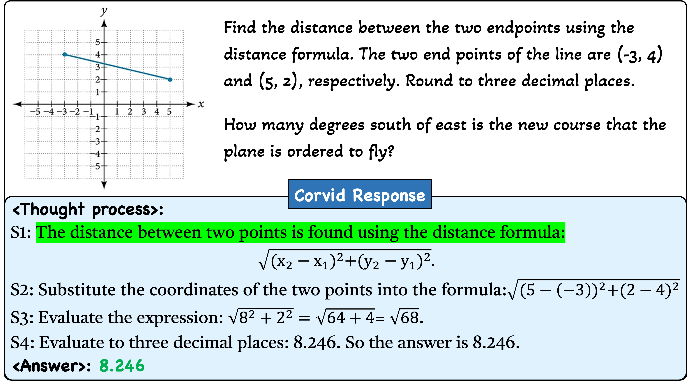
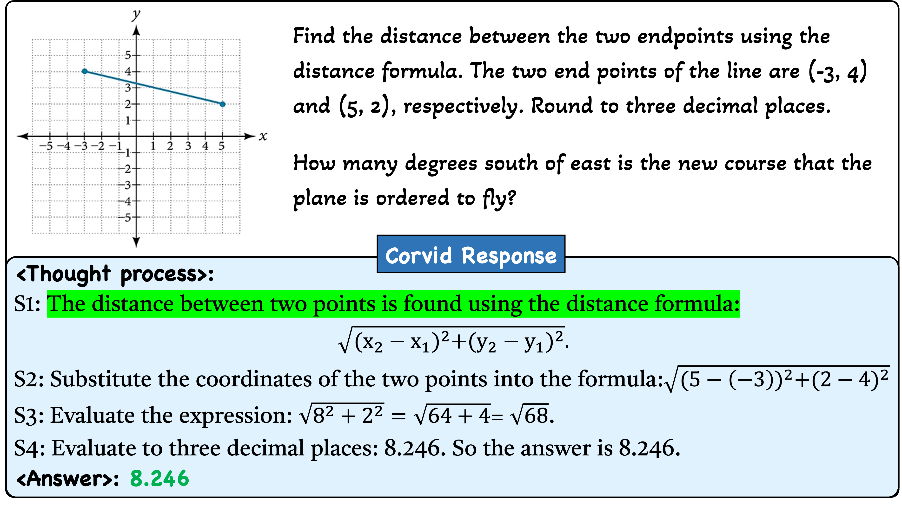
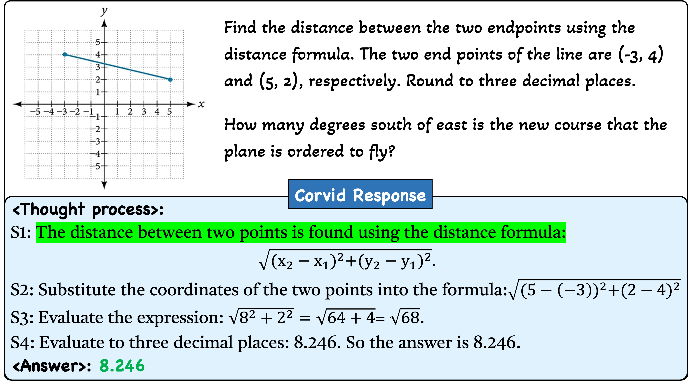

Mathematical Reasoning
 

◈ Corvid is an MLLM with enhanced CoT reasoning capabilities. Architecturally, it incorporates a hybrid vision encoder for informative visual representation and a meticulously designed connector (GateMixer) to facilitate cross-modal alignment. During inference, Corvid implements a self-verification strategy to mitigate over-reasoning on easy samples and under-reasoning on hard ones.
◉ Training Data Curation. We initially construct a multimodal CoT-formatted instruction dataset, MCoT-Instruct, and subsequently introduce MAG-1M, Corvid-1M, and o1-320K to support the three-stage training of Corvid.

◉ Training Procedure. Corvid undergoes the following three-stage training:
◉ Evaluation on Multimodal Reasoning Benchmarks. Corvid is evaluated on nine benchmarks to assess its problem-solving and mathematical reasoning capabilities.
 Corvid's Response Demonstration

Corvid's Response Demonstration



@inproceedings{jiang2025corvid,
title={Corvid: Improving Multimodal Large Language Models Towards Chain-of-Thought Reasoning},
author={Jiang, Jingjing and Ma, Chao and Song, Xurui and Zhang, Hanwang and Luo, Jun},
booktitle = {Proceedings of the IEEE/CVF International Conference on Computer Vision},
year={2025}
}